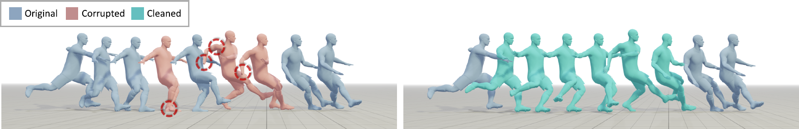

Yuxuan Mu (1)Hung Yu Ling (2)Yi Shi (1)Ismael Baira Ojeda (2)Pengcheng Xi (3)Chang Shu (3)Fabio Zinno (2)Xue Bin Peng (1,4)
(1) Simon Fraser University(2) Electronic Arts(3) National Research Council Canada(4) NVIDIA

Abstract
Motion capture (mocap) data often exhibits visually jarring artifacts due to
inaccurate sensors and post-processing. Cleaning this corrupted data can
require substantial manual effort from human experts, which can be a costly
and time-consuming process. Previous data-driven motion cleanup methods offer
the promise of automating this cleanup process, but often require in-domain
paired corrupted-to-clean training data. Constructing such paired datasets
requires access to high-quality, relatively artifact-free motion clips,
which often necessitates laborious manual cleanup. In this work, we present
StableMotion, a simple yet effective method for training motion cleanup
models directly from unpaired corrupted datasets that need cleanup. The
core component of our method is the introduction of motion quality
indicators, which can be easily annotated— through manual labeling or
heuristic algorithms—and enable training of quality-aware motion generation
models on raw motion data with mixed quality. At test time, the model can
be prompted to generate high-quality motions using the quality indicators.
Our method can be implemented through a simple diffusion-based framework,
leading to a unified motion generate-discriminate model, which can be used
to both identify and fix corrupted frames. We demonstrate that our proposed
method is effective for training motion cleanup models on raw mocap data in
production scenarios by applying StableMotion to SoccerMocap, a 245-hour
soccer mocap dataset containing real-world motion artifacts. The trained
model effectively corrects a wide range of motion artifacts, reducing motion
pops and frozen frames by 68% and 81%, respectively. On our benchmark dataset,
we further show that cleanup models trained with our method on unpaired
corrupted data outperform state-of-the-art methods trained on clean or paired
data, while also achieving comparable performance in preserving the content of
the original motion clips.
@inproceedings{
mu2025StableMotion,
author={Mu, Yuxuan and Ling, Hung Yu and Shi, Yi and Ojeda, Ismael Baira and Xi, Pengcheng and Shu, Chang and Zinno, Fabio and Peng, Xue Bin},
title = {StableMotion: Training Motion Cleanup Models with Unpaired Corrupted Data},
year = {2025},
booktitle = {SIGGRAPH Asia 2025 Conference Papers (SIGGRAPH Asia '25 Conference Papers)}
}